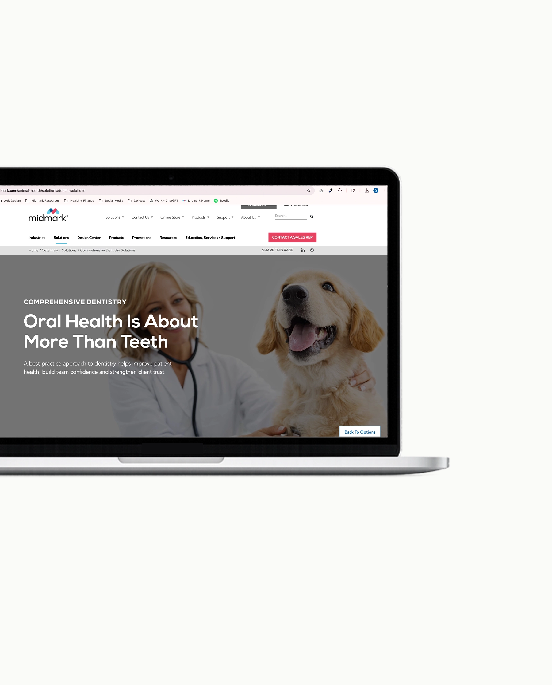
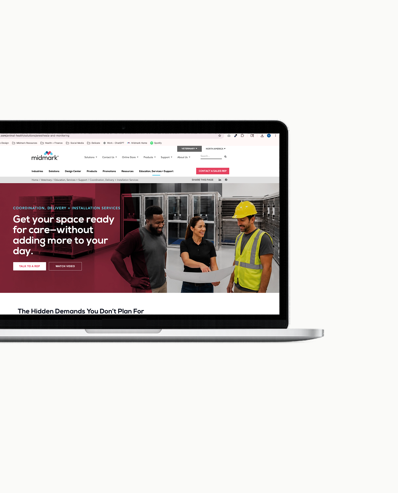
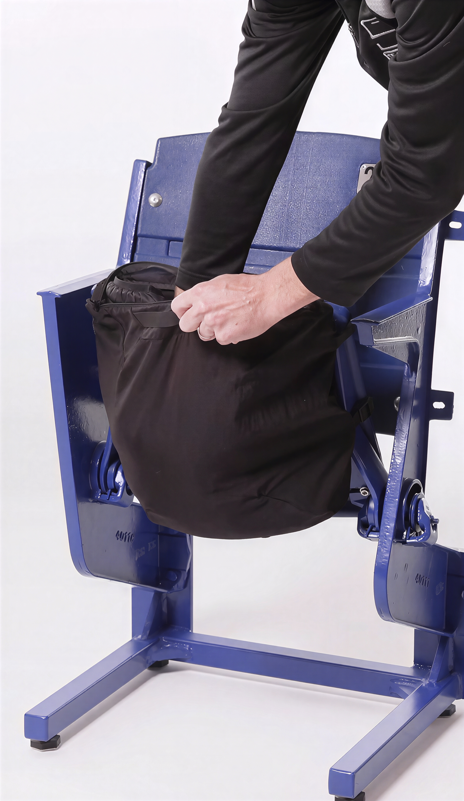
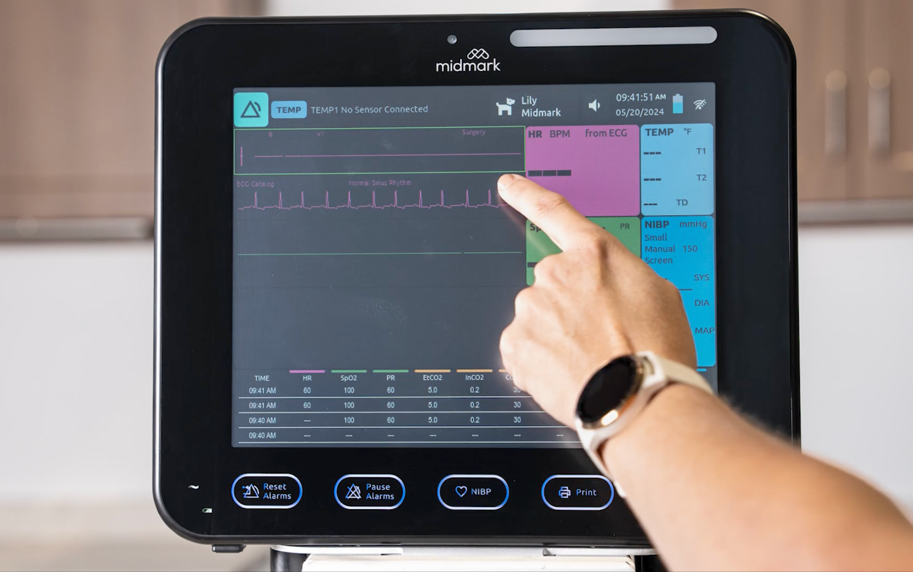
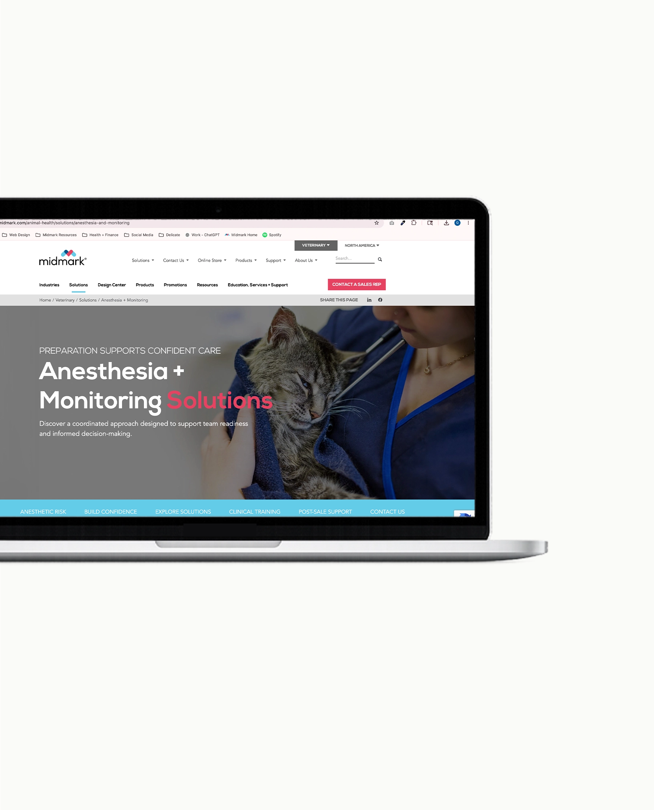

01 / 05
WEB DESIGN · UX/UI
Comprehensive Dentistry
A clearer, more guided veterinary dentistry experience, built around intuitive navigation and meaningful actions.
View Case StudyI'm a digital designer based in Fort Loramie, Ohio, with experience designing digital experiences for enterprise websites. I'm passionate about improving the lives of others through design and am always looking for new ways to learn and grow.
I design and build digital experiences that turn business goals and complex content into clear, engaging interfaces. My work combines creative problem-solving, visual design, responsive thinking, and front-end execution.
At Midmark, I own projects end-to-end: I collaborate with stakeholders to define goals, prototype ideas, design with systems thinking, and publish directly to the web. I care deeply about the details — hierarchy, spacing, motion, and the performance of every component.
Whether I'm designing a landing page for a cloud-based dental product or building an interactive prototype for internal review, the output is always production-quality and purpose-driven.
Every project starts with goals, audiences, and clear success metrics.
I write HTML/CSS and collaborate directly with dev teams at code level.
I build with reuse, consistency, and scalability in mind from day one.
I take projects from discovery and wireframe all the way to live URL.
Growth has always been important to me, both personally and professionally. I was grateful to be featured in Midmark's Commit to Growth video series, where I had the opportunity to reflect on my journey and what continuous learning means to me.
Featured in Midmark's Commit to Growth seriesFrom digital experiences and interactive interfaces to video production and visual storytelling, my work combines creativity, strategy, and thoughtful execution.

01 / 05A clearer, more guided veterinary dentistry experience, built around intuitive navigation and meaningful actions.
View Case Study
02 / 05A customer-first digital experience to introduce Midmark Veterinary's new Coordination, Delivery + Installation Services
View Case Study
03 / 05Turning a familiar game-day frustration into engaging social-first product storytelling.
View case study
04 / 05Transforming extensive clinical footage into a navigable training video with original effects, captions, and chapters.
View case study
05 / 05Helping veterinary audiences explore connected solutions through clearer structure, navigation, and calls to action.
View live siteShowing all 5 projects.
A collaborative, design-led process grounded in creative thinking, clear communication, and thoughtful execution.
I bring more than visual styling to a project. I help teams organize ideas, explore creative directions, and turn complex content into polished, responsive interfaces. Because I understand HTML, CSS, and CMS implementation, I design with the final build in mind from the start.
I love creating digital experiences that are thoughtful, visually engaging, and built with purpose. Whether you're hiring for a full-time UI design role, looking for a creative collaborator, or simply want to talk design—I’d love to hear from you.
The best conversations usually start with a simple hello. Feel free to reach out—I'd love to learn more about you, your team, and what you're building.
Fort Loramie, Ohio